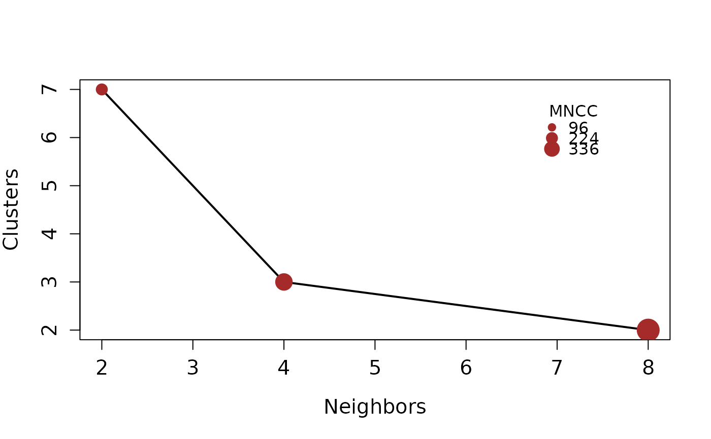

csd_estimate: Estimate the connectivity suitability and dispersal plot
Source:R/csd_estimate.R
csd_estimate.Rdcsd_plot gives an estimate of the number of geographic clusters given a set of dispersal hypothesis and a suitability raster
Usage
csd_estimate(model, dispersal_steps = c(2, 4, 8, 16, 32, 64))Value
A list of length three. The first element contains the Connectivity- Suitability-Diagram information estimated for each element in the vector of dispersal_steps. The second is tbl_df object with a summary of the number of cluster of each dispersal step and the mean number of connected clusters. The last element is base plot showing the information contained in the tbl_df object.
Details
For more information about the Connectivity-Suitability-Diagram
see bam_clusters
References
Soberón J, Osorio-Olvera L (2023). “A dynamic theory of the area of distribution.” Journal of Biogeography6, 50, 1037-1048. doi:10.1111/jbi.14587 , https://onlinelibrary.wiley.com/doi/abs/10.1111/jbi.14587. .
Examples
# \donttest{
model_path <- system.file("extdata/Lepus_californicus_cont.tif",
package = "bamm")
model <- raster::raster(model_path)
model <- model > 0.7
csd_plot <- bamm::csd_estimate(model,
dispersal_steps=c(2,4,8))
#>
|
| | 0%
|
|======================= | 33%
|
|=============================================== | 67%
|
|======================================================================| 100%

csd_plot$plot
# }